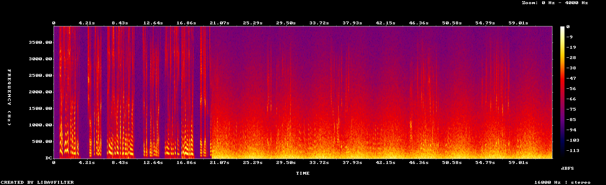
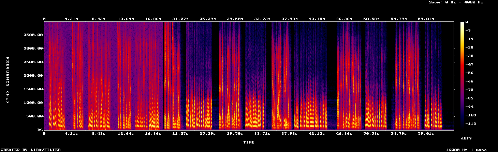

A 63-second synthetic conversation between Sam and Alex. At 0:20 the phone goes into Sam's pocket: a rumble covers both mics and Sam turns muffled. Switch between the original and what unmuffle made of it, at the same moment.
Tip: jump to 0:21, play Original, then switch to Cleaned. Click any line below to hear it.
| Plain Whisper | unmuffle | |
|---|---|---|
| Word error rate | 0.48 | 0.20 |
| Sam's words found in the pocket | 12% | 81% |
| Speaker labels | none | 93% right |


How it was found, including the attempts that failed: The pocket recording. Code, tests, and the full scorecard: github.com/auswallace/unmuffle.